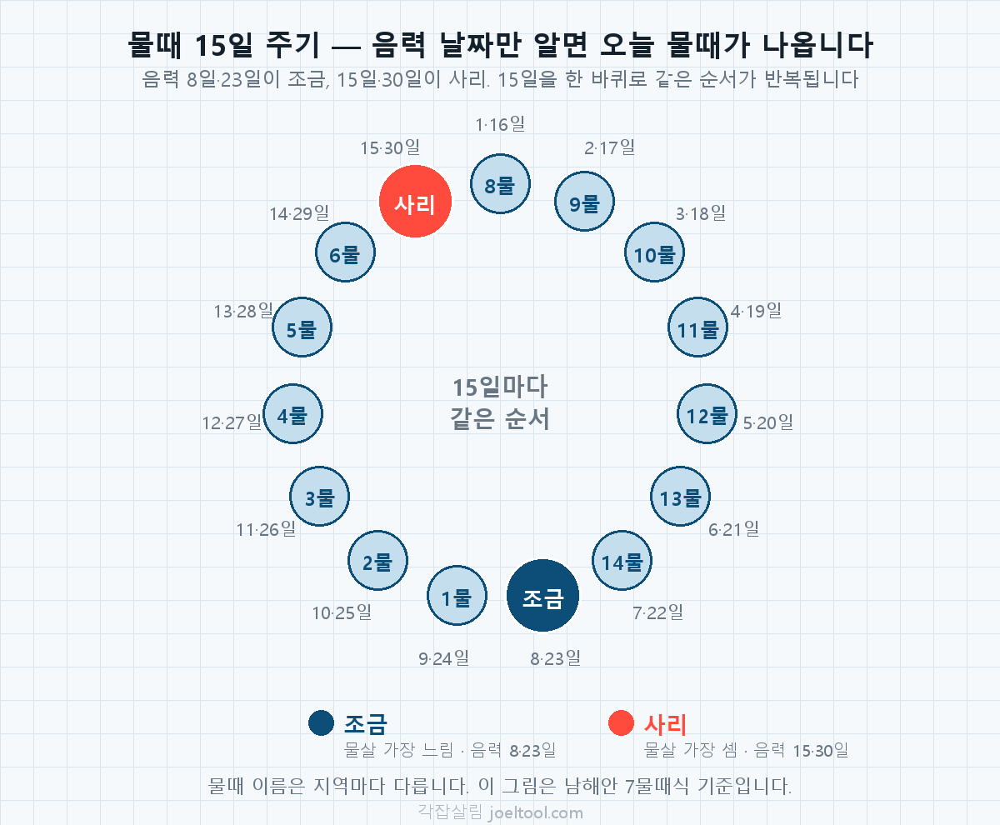
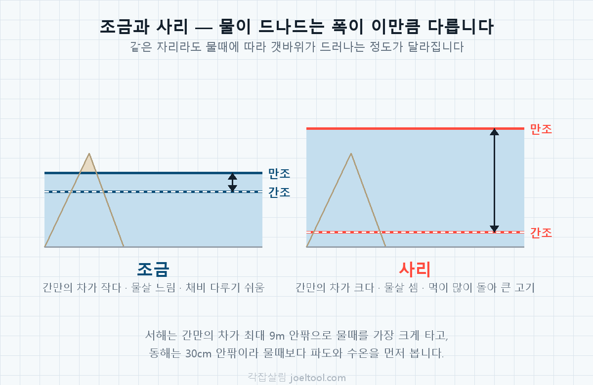

낚시 물때표 — 오늘 물때와 갯바위 포인트 추천
🎣 낚시 처음이세요? 갈 곳과 갈 시간을 정해드려요
낚시가 처음이면 어디로 언제 가야 할지부터 막막하죠. 언제 갈지, 어느 바다인지, 뭘 노릴지 세 번만 고르면 실제 낚시 포인트 –곳 중에서 차로 갈 수 있는 곳과 몇 시에 가면 되는지를 알려드려요. 바닷물은 하루에 두 번 차고 빠지는데(이걸 물때라고 해요), 그 시간에 맞춰 가야 고기가 뭅니다.
ℹ️ 이 정보는 어디서 왔나요?
–
포인트 위치
마커를 누르면 그 자리의 정보와 오늘 물때가 나와요.
추천 포인트
물때표 보는 법 — 음력 날짜로 오늘 물때 확인하기
물때는 음력 날짜만 알면 바로 나옵니다. 15일을 한 주기로 같은 순서가 반복되고, 음력 8일과 23일이 조금, 15일과 30일이 사리입니다. 아래 표는 위 도구가 쓰는 것과 같은 공식으로 만든 물때표입니다.
| 음력 날짜 | 물때 | 특징 |
|---|---|---|
| 음력 1일 · 16일 | 8물 | 사리에서 막 꺾인 때 |
| 음력 2일 · 17일 | 9물 | |
| 음력 3일 · 18일 | 10물 | |
| 음력 4일 · 19일 | 11물 | |
| 음력 5일 · 20일 | 12물 | |
| 음력 6일 · 21일 | 13물 | |
| 음력 7일 · 22일 | 14물 | |
| 음력 8일 · 23일 | 조금 | 물살이 가장 느립니다 |
| 음력 9일 · 24일 | 1물 | 조금에서 막 살아난 때 |
| 음력 10일 · 25일 | 2물 | |
| 음력 11일 · 26일 | 3물 | |
| 음력 12일 · 27일 | 4물 | |
| 음력 13일 · 28일 | 5물 | |
| 음력 14일 · 29일 | 6물 | |
| 음력 15일 · 30일 | 사리 | 물살이 가장 셉니다 |

조금과 사리가 뭔가요
조금은 밀물과 썰물의 높이 차가 가장 작아 물살이 느린 날입니다. 사리는 그 반대로 조수 간만의 차가 가장 커서 물살이 가장 셉니다. 보름달과 그믐달 무렵에 사리가 오고, 반달 무렵에 조금이 옵니다. 달이 바닷물을 끌어당기는 힘이 태양과 겹치느냐 어긋나느냐의 차이입니다.
물때에 따라 뭐가 달라지나요
- 조금 전후 — 물살이 약해 초보자가 채비를 다루기 쉽습니다. 다만 물이 잘 안 움직여 입질이 뜸할 수 있습니다.
- 중간 물때(3~5물, 10~12물) — 물이 적당히 흐르고 조작도 어렵지 않아 무난합니다.
- 사리 전후 — 물살이 세서 채비가 흘러가 다루기 어렵지만, 먹이가 많이 돌아 큰 고기가 붙는 날로 봅니다.

바다마다 물때 영향이 다릅니다
서해는 조수 간만의 차가 커서(인천 기준 최대 9m 안팎) 물때를 가장 크게 탑니다. 갯벌이 드러나는 정도가 달라 들어갈 수 있는 자리 자체가 바뀝니다. 남해는 그 중간이고, 동해는 간만의 차가 30cm 안팎으로 작아 물때보다 파도와 수온을 먼저 봅니다.
물때가 뭐고 왜 봐야 하나요
물때가 뭔가요
바닷물은 하루에 두 번 들어왔다 빠집니다. 이 드나드는 세기가 날마다 달라서 15일 주기로 1물부터 15물까지 번호를 붙여 부릅니다. 물이 가장 세게 드나드는 날이 사리(7물 무렵), 가장 약한 날이 조금(15물)이에요. 물이 움직여야 고기가 먹이를 찾아 나오기 때문에, 같은 자리도 물때에 따라 잡히고 안 잡히고가 갈립니다.
어떻게 알려주나요
포인트마다 언제가 좋은지가 원본 데이터에 들어 있습니다. 이걸 오늘(또는 고르신 날)의 물때번호와 대조해서 맞는 날인지 판정하고, 국립해양조사원 예보로 몇 시에 가면 되는지까지 알려드려요. 앞으로 7일 중 어느 날이 좋은지도 함께 보여드립니다.
이건 못 해요
발판이 어떤지, 주차를 어디 하는지, 화장실이 있는지는 공개된 어떤 데이터에도 없습니다. 가는 방법과 발판은 포인트 이름과 좌표에서 읽어낸 것이라, 확실하지 않은 곳은 "알 수 없어요"라고 적었어요. 좌표도 100~200m 오차가 있을 수 있습니다. 동해안은 물이 드나드는 폭이 10~20cm라 물때 영향이 거의 없어 판정하지 않습니다.